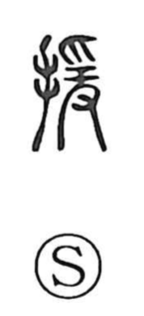

援

Uncategorized
Kun: hiku, tasukeru | On: en
aid ・ help ・ support
Explanation
援 is a picto-phonetic character built on the phonetic element 爰, which gives the on reading en. The graph 爰 depicts the act of pulling with the hands from above or below and thus carries the sense “to pull.” Although 爰 already shows hands at work, 援 adds the hand radical, as if supplying an extra hand. From the image of reaching out and pulling someone, the meaning naturally extends to “to help, to give support.”